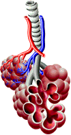
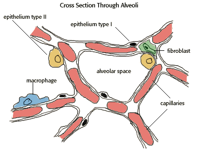

Lung Toxicology Problem Set
Problem 2: Alveolar structure
For help to answer the question:
Which of the following alveolar cell types clean particles deposited in the lungs?
A. macrophages B. epithelium type I C. epithelium type II D. fibroblasts E. capillaries
Tutorial
|
The blind sacs in the lung tissue, called alveoli, consist of several types of cells. Each alveolus has a network of capillaries that carry blood in the lungs.
Epithelium type I cells are the largest, thin cells that form the walls, or septa, of the alveoli. Epithelium type II cells also line the alveoli and secrete a substance called "surfactant." Surfactant coats the alveoli and provides pressure to keep them from collapsing. Without surfactant the alveolar surfaces tend to stick together which causes the alveoli to collapse.
|
 |
|
Macrophages in the alveoli are scavenger cells that work to keep the lung free of "foreign" materials. Fibroblasts are part of the connective tissue in the lungs.
 |


The Biology Project
The University of Arizona
Tuesday, October 14, 1997
Contact the Development Team
http://www.biology.arizona.edu
All contents copyright © 1997. All rights reserved.